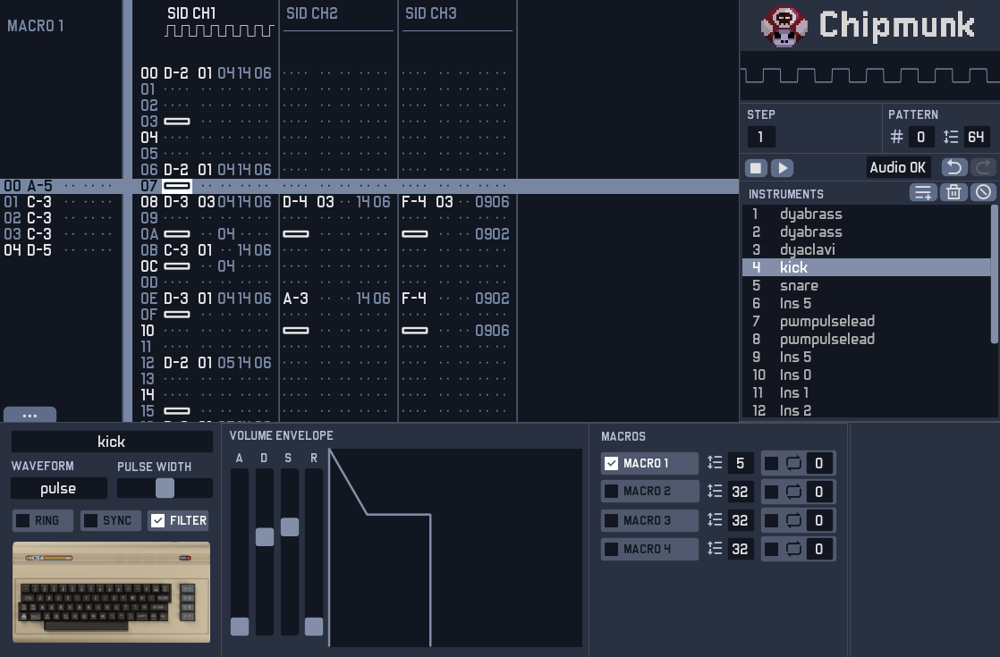

Chipmunk is a chiptune sound tracker for Windows, MacOS and Linux.

Music for retro systems like Commodore 64, MSX, Game Boy, Sega Genesis, etc. can be composed using Chipmunk from a Windows, MacOS or Linux desktop computer.
Chipmunk emulates the original sound hardware of retro systems. Music produced can be exported as a wave file or as a VGM file to play it directly using original hardware.
Project status
Chipmunk is in an early development stage, no public build is available yet.
Some of the planned features
- Solid and friendly UI
- Classic retro systems sound chips emulation
- Instruments macros
- Full do/undo functionality
- Plugins support for third party sound chip core emulations
- Real-time multi user remote collaboration
- Public format song files specs
- Export songs as WAV and VGM
- MIDI in controllers
- Audio APIs: WASAPI, ASIO, DirectSound, Core Audio, Alsa, Pulse, OSS, Jack
Want to be up to date with the project?
Progress and news will be shared on Twitter